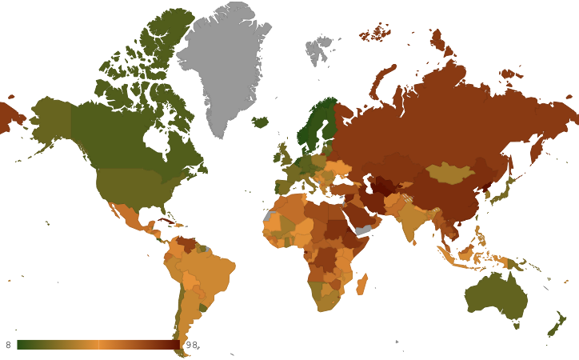

This is for an english essay,
I'm going to cut to the chase here, freedom of speech is an interesting topic and i'll cover it in a global context. One of the best characteristics of the broader freedom of speech subcategory is the freedom of the press
and freedom house released their latest report of the freedom of press, and since data is better presented visually I made a graph of it:

Click to download .
If you cant download or prefer
to just see me type it out, the gist of the report is that at the top we have countries like norway and denmark, leading, and countries like North Korea and Turkmenistan
alternatively the global state democracy indices states that denmark, finland, uruguay, belgium, and new zealand
(not in that order) have the best freedom of expression whilst china, belarus, and north korea have the worst